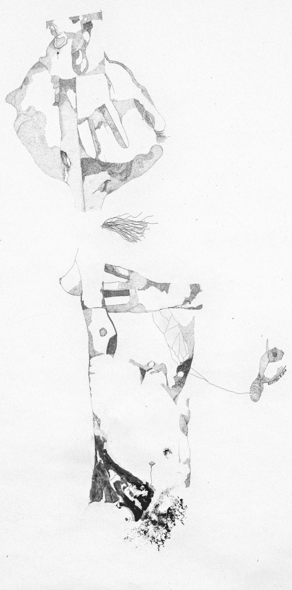
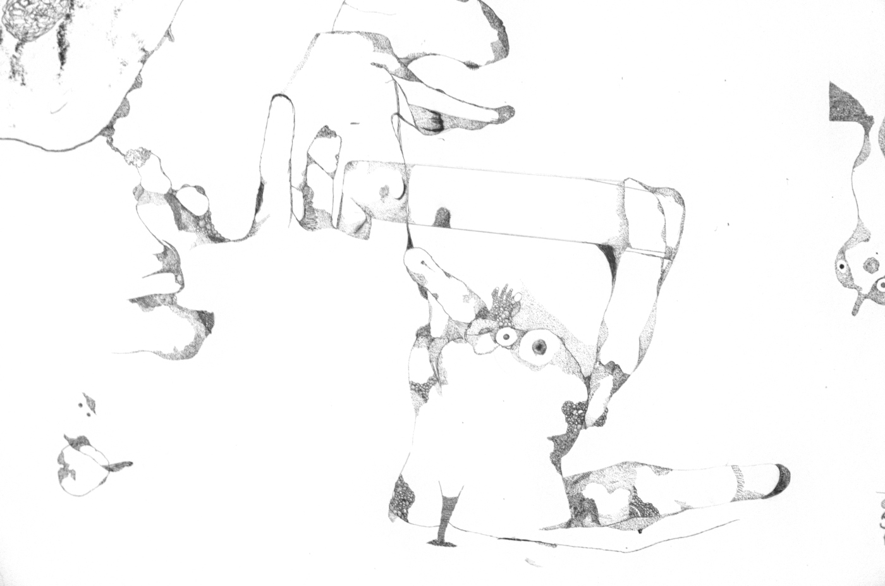

<<Accouchement>>
<<Pensées>>
<<À terre>>
<<Crise cardiaque>>
<<Humain>>
<<Amical>>
<<Petit>>
J'ai essayé de représenter le corps humain
entier dans la tête et le cou, la vessie
est représentée par des fleurs, les poumons
sont pourris par le tabac, la colone
vertébrale ressort.
<<Règles>>

Les algues ont été récoltées dans un ancien
aquarium qui trainait dans l'appartement.
Les tâches sont faites avec de la peinture
noir de mars.
<<Déformé>>
J'ai imprimé sur un CD non-imprimable pour
qu'il ne sèche pas afin de faire des taches.
Ce dessin m'a bien fait mal à la main :)

<<Sans titre 1>>
Plus petit, plus simple, les seuls éléments
humains sont un doigt, un pied, une oreille
et un cerveau.
<<Tête-pied>>
Réalisé en deux jours seulement !
<<Sportif>>
J'ai essayé d'assembler des différents scans de
ce dessin grâce à Hugin, ça n'a
malheureusement pas marché j'ai donc eu
recours à Gimp manuellement
<<L'homme aux idées>>
Très fier de celui-ci, initialement censé
être un homme-champignon qui se dévorait.
Également réalisé en deux jours seulement.
Était censé être un cadeau de fête des
mères, mais je préfère le garder :p.
<<Hommage aux moches>>
Celui-ci est dans un style un peu BD.
Pas vraiment de texture, pas très
expérimental, mais je suis toujours
content. Fait en 1.5 jour.
<<Tribunal populaire>>
Très fier de celui-ci.
<<Bras>>
Premier dessin réalisé à la plume et sans encre de chine.
Fait en 1.5 jours.
<<Homme moderne>>
Second dessin réalisé à la plume.
Métaphore parlant de la relation
entre l'homme moderne et le
capitalisme.
<<La nature humaine>>
Également à la plume.
Dernière fois que je
le mentionne. Fait en
2 jours. Représente
une bête humaine.
<<Obsession>>
Dessin parlant de l'envie
de violer des étrangers :)
Sera sûrement le premier
d'une série de 3 dessins
sur mes pensées gênantes.
<<Médicaments>>
La prise de médicaments
pour soigner un problème
ainsi que les effets
secondaires de ces mêmes
médicaments.
<<L'état et la surveillance>>
Les restrictions qu'imposent
les différents états pour
mieux surveiller la foule.
<<L'état et la tyrannie>>
L'utilisation de la violence
dans le but de contrôler.
À noter également la présence
d'une caméra de sécurité dans
ce dessin.
<<Paranoïa>>
Expression des pensées
"paranoïaques". Omni-
présence des yeux.
Retourner en haut
[Urgelle, Les dessins d'Urgelle, 29/06/2022, France].
Copyleft: cette œuvre est libre, vous pouvez la copier, la diffuser et la modifier selon les termes de la Licence Art Libre http://www.artlibre.org